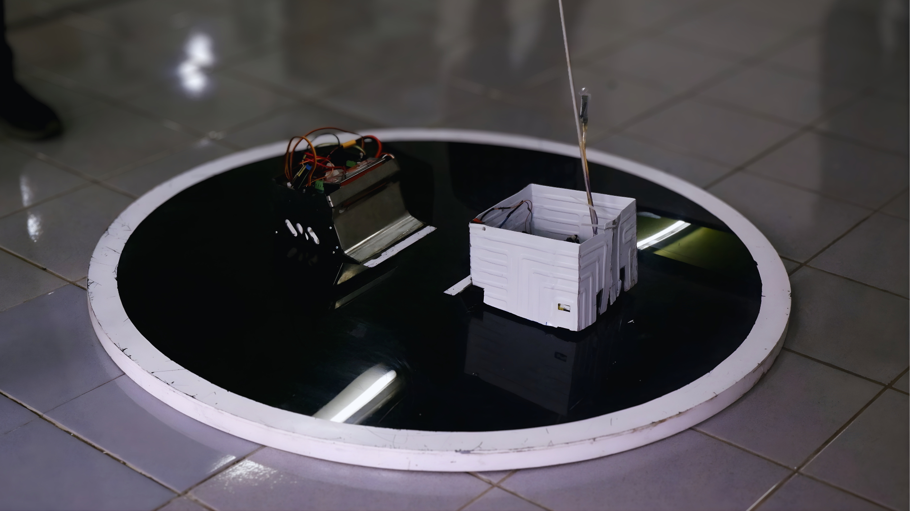
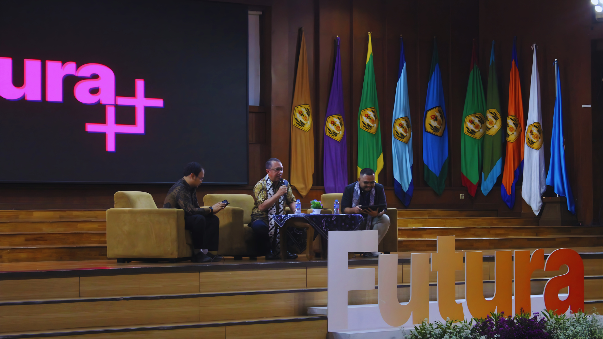
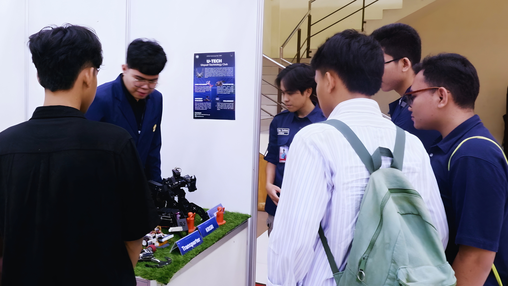
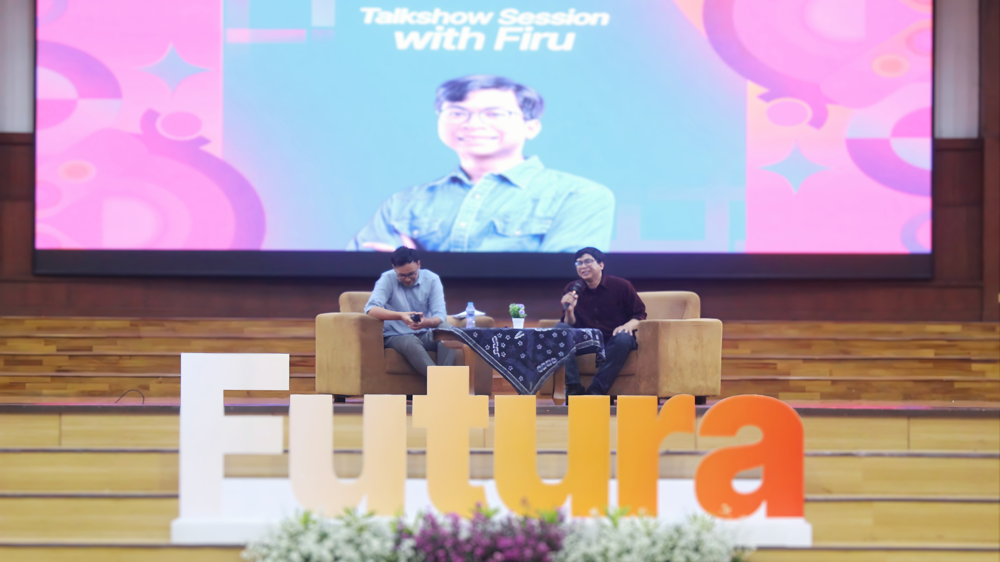

The Grand Architecture
Futura is the flagship annual megaproject of HMTE Unpad, recognized as our most complex and largest external program. Operating over a rigorous 9-month timeline, I served as the Vice Project Officer 2 (VPO 2). My mandate was massive. I oversaw the strategic execution of three major departments: the National Seminar, the Robotics Competition, and the Health, Safety, & Environment (K3L) task force. Managing multiple divisions under these departments required strict operational discipline, robust crisis management, and an unyielding commitment to execution.
Scaling the Robotics Competition
Held on November 8, 2025, the robotics segment of Futura required intense technical and logistical oversight. We didn't just maintain the status quo; we pushed the boundaries. I pioneered a historic expansion by launching two distinct competition categories simultaneously, specifically Heavy Sumo (3kg) and Transporter, for the first time since the event's inception in 2017.
This bold operational expansion resulted in scaling the competition participation by 60%, growing from 33 to 53 teams across the nation. On D-Day, my team and I successfully managed a high-voltage arena with over 150+ active participants, ensuring zero critical safety incidents under the K3L division's watch.

The heat of the arena: Witnessing intense technical battles in the newly expanded robotics categories.
The National Seminar & Tech Exhibition
Two weeks later, on November 22, 2025, we executed the intellectual core of Futura. We targeted a highly niche audience of 80+ professionals and academics passionate about the energy sector. The grand theme was:
"Implementasi Energi Cerdas di Era Industri 5.0: Optimalisasi Smart Grid dan Energi Baru Terbarukan"
The event kicked off with a Plenary Session featuring highly experienced industry veterans from BRIN (National Research and Innovation Agency) and MRT Jakarta. Their deep technical insights provided a solid academic foundation for the day's discourse.

Distinguished industry experts sharing blueprints for smart energy implementation.
Live Technology Showcase
To complement the plenary talks, we integrated a dynamic, continuous Technology Exhibition that ran from morning until the event’s conclusion. My team successfully scouted and onboarded premium exhibitors from various institutions across Indonesia.
This live showcase transformed the venue into a tech hub, featuring innovative hardware from Polban, advanced robotic prototypes from the Unpad Technology Club, and several other university-led tech initiatives. Participants had the unique opportunity to interact directly with the creators, bridging the gap between theoretical seminar topics and practical hardware application.

A bustling tech hub: Participants engaging directly with innovators at the Live Technology Showcase.
An Entertainment Breakthrough
Understanding that modern tech seminars need dynamic engagement, I spearheaded an initiative to secure our first-ever high-profile Guest Star for the interactive Talkshow session. We brought in Firu Designer, an ITB Petroleum Engineering alumnus working in Renewable Energy who is also a well-known influencer and content creator. His unique blend of technical industry experience and mass-audience communication skills provided a fresh, engaging perspective that captivated the audience.
This marked a significant milestone as the first successful entertainment-educational breakthrough in the history of Futura.

Breaking barriers: Firu Designer captivating the audience with a unique blend of tech and entertainment.
The Result
By effectively bridging the gap between rigorous technical competitions, elite academic seminars, and modern entertainment, Futura 2025 concluded as a monumental success. Managing over 230+ national attendees across multiple days, venues, and complex formats proved that strategic delegation, safety protocol enforcement, and bold innovation are the ultimate keys to executing a megaproject of this caliber.

A tale of two days: A visual comparison showcasing the grand scale of both our high-voltage Robotics Arena (left) and our intellectual National Seminar (right).